Carto is a cloud-based mapping application that makes it easy to produce interactive, online maps. These maps can include animations of data over time.
It is also a geospatial database, allowing you to perform GIS analyses and process geodata using Structured Query Language. If you are comfortable working with databases, you may find Carto a good alternative to the point-and-click interface of QGIS for these tasks.
Download the data from this session from here, unzip the folder and place it on your desktop. It contains the following folders and files:
ca_healthcareca_counties_medicare.zip Zipped shapefile with data on Medicare reimbursement per enrollee by California county in 2012, as used in week 10.healthcare_facilities.csv Locations and other data for hospitals and other healthcare facilities in California, as used in week 10.seismic_risk.zip Zipped shapefile detailing the risk of experiencing a major earthquake across the continental United States, as used in week 10.sfsf_test_addresses.csv Sample of 100 addresses in San Francisco, geocoded in week 9.sfpd_stations.zip Zipped shapefile with locations of San Francisco police stations.All of the shapefiles have been compressed/zipped, as this is required to load them into Carto.
To demonstrate Carto’s core map-making functionality, we will first make an interactive online version of the static map we made in week 10.
Login to your Carto account, open the drop-down menu under Maps at top left and switch to Your datasets. Then click the blue NEW DATASET button at top right.
You should now see the following screen:
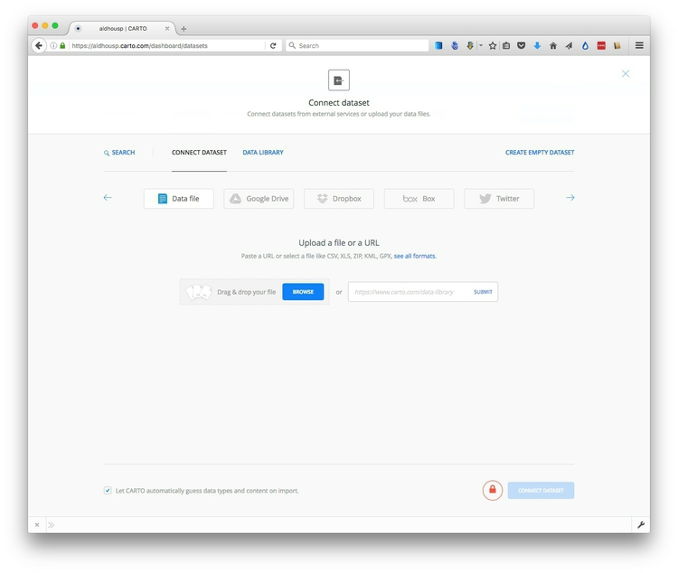
With the Data file tab selected, click the Browse button, navigate to the zipped ca_counties_medicare.zip shapefile and click Open. Then click the green Connect dataset button.
Cartocan import data in a variety of formats, including CSV, KML, GeoJSON and zipped shapefiles. See here for more on supported data formats.
Once the data has imported, you will see the uploaded data table in DATA VIEW:
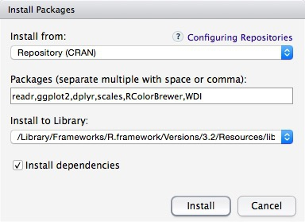
Notice that, in addition to the fields from the original data, each row has been given a cartodb_id, which is a unique identifier for each. The table also has a field called the_geom which has the tag GEO. This field is central to how Carto works, defining the geometry of any map you make. As in QGIS, these geometries can be points, lines or polygons — which is what we have here.
You can rename fields, sort the table by the data in them, or change their data type (for example from numbers to strings of text), by clicking the downward-pointing triangle next to the header of each.
Switch to MAP VIEW to see the basic, unstyled map:
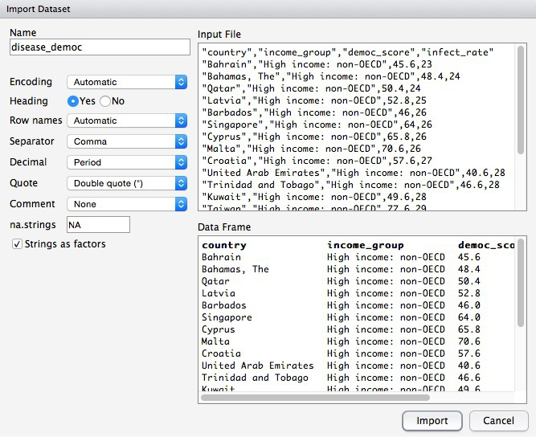
Click the small return arrow at top left to go back to the overview of your datasets.
Notice that the top menu has a link to DOCUMENTATION, which has links to Carto’s technical manuals. The DATA LIBRARY link contains useful datasets that you can import into your own account. Take a few minutes to explore what’s there, before returning to your DATASETS.
Now click the NEW DATASER button again and import the file healthcare_facilities.csv, which should look like this in the DATA VIEW:
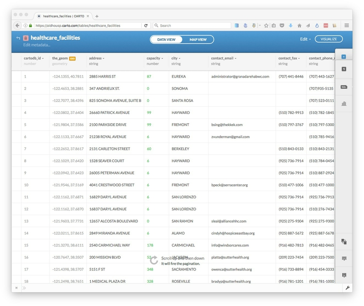
Notice that the_geom for points is given by their longitude and latitude co-ordinates.
Click on the MAP VIEW to see the locations of all of the facilities:
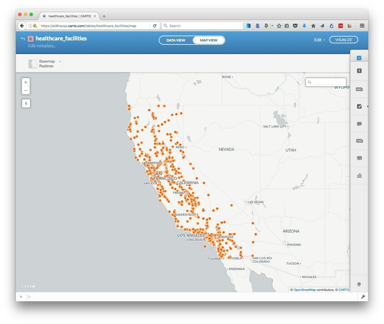
Exit the healthcare_facilities map and reopen the ca_counties_medicare dataset by clicking on its name in your DATASETS. Then click the VISUALIZE button at top right.
You will then see a prompt to create a new map. Click the green OK, CREATE MAP button:
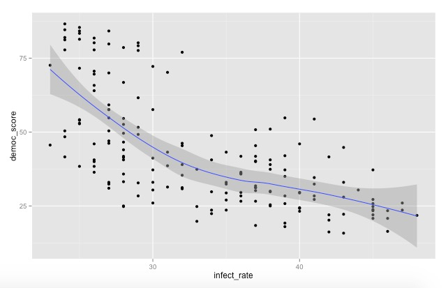
Rename this map California hospitals by clicking on its name at top left:
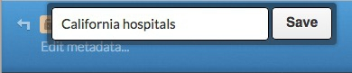
Now add the healthcare_facilities to the map, by clicking on the blue + button to the right. Select the healthcare_facilities layer so that its icon is highlihgted in blue, then click the ADD LAYER button at bottom right.
Now select MAP VIEW to see both layers on the same map:
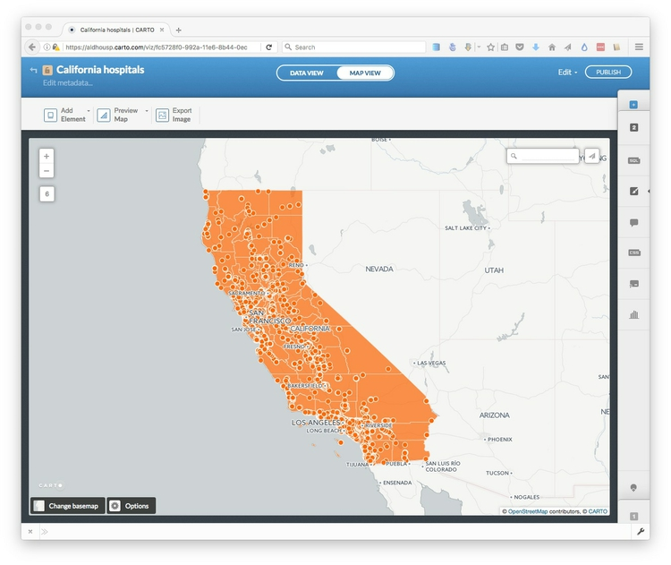
You can tell when you’re in a map visualization, rather than a single dataset, because the MAP VIEW has a black border.
Now choose a basemap for your visualization, by clicking Change basemap at bottom left. Take a few minutes to explore the built-in basemap options. You are not limited to these basemaps, however.
To import another tiled basemap from elsewhere on the web, click the blue plus sign next to Yours to call up the following dialog box:
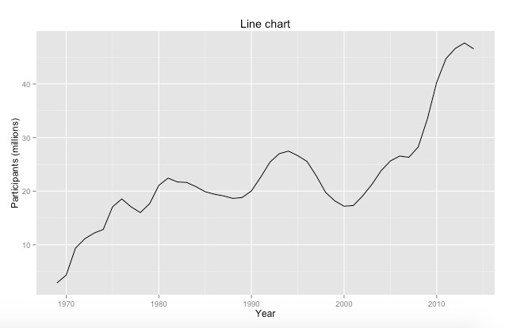
The XYZ tab allows you to call in publicly available basemaps using URLs in the following format:
https://{s}.tiles.mapbox.com/v3/mapbox.world-bright/{z}/{x}/{y}.png
We will use this “world bright” basemap, provided by MapBox (see the other basemaps from MapBox here). The Leaflet Providers preview is a good place to look for available basemaps from other providers. It previews the maps and also exposes their XYZ URLs:
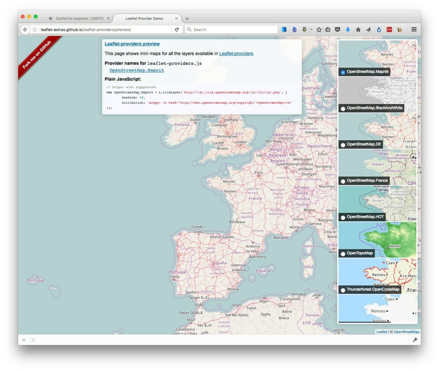
Back in Carto, enter the XYZ URL for the MapBox world bright map and click Add basemap. The map should now look like this:
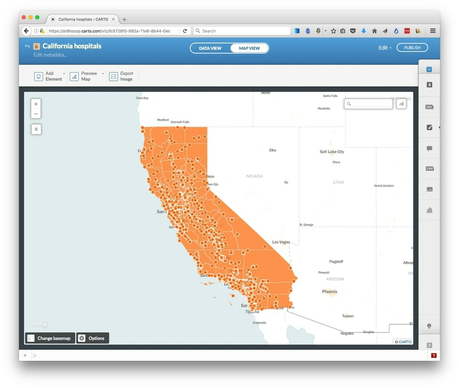
Notice that the toolbar at right has tabs numbered 1 and 2. It you hover over them, you will see that they correspond to the ca_counties_medicare and healthcare_facilities layers respectively.
Click on 1 to expose the Visualization wizard for the ca_counties_medicare layer, which can also be reached by clicking the paintbrush icon:
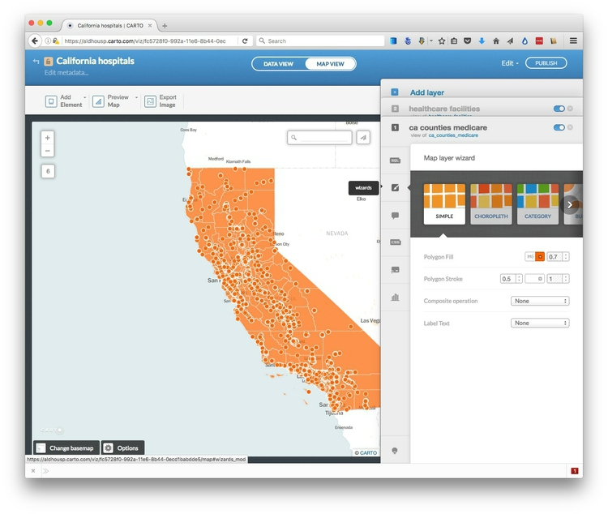
(You can collapse the wizards at any time by clicking to the left of any of the icons.)
Notice that opening the wizard has also exposed blue toggle controls for each layer, which can be used to turn the visibility for each on and off. Hide the healthcare_facilities layer so we can see what we are doing.
Scroll from left to right through the visualization options, and select CHOROPLETH to make a choropleth map.
Set hospital as the data Column, select 5 Buckets, set them by Quantile and set the Polygon Stroke to zero to remove the lines from the map layer. The map should now look like this:
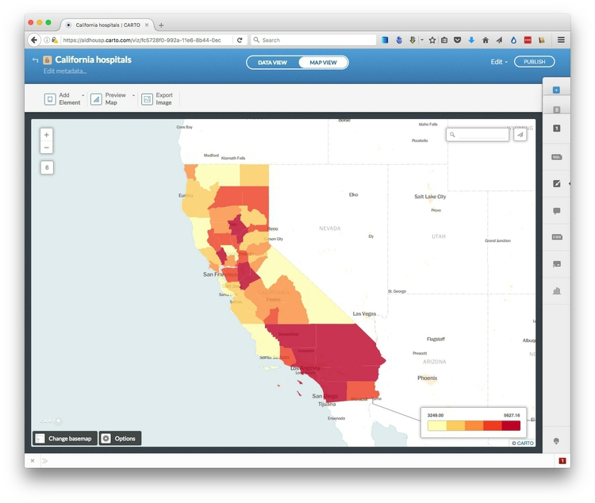
Now click 2 to switch to the healthcare_facilities layer and turn on its visibility.
In the Visualization wizard select CATEGORY and color the circles by the type of facility, by selecting type as the data Column. The map should look like this:
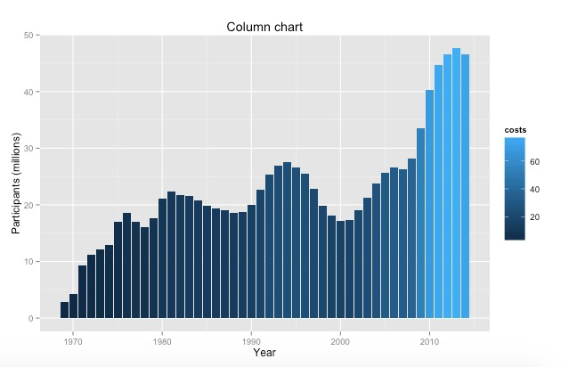
We now have a rough approximation of the map we made in week 10 using QGIS, but there are important differences: We do not have the custom bins we used for the choropleth map; the circles are not scaled by area according to capacity of the healthcare facilities; we have not yet filtered the healthcare facilities for the two types we are interested in; and the colors haven’t been fully customized.
The Carto Visualization wizard does have a BUBBLE option, which sizes circles according to values in the data. However, it does not accurately and continuously vary the area of circles according to values in the data. To achieve that, we need to create a new column in the data, containing the square root of the values in the capacity column.
This is because web-based applications like Carto set the size of circles by their width, or twice their radius. From week 2, you should remember that we need to scale by the square root of the radius to size circles so that their area is proportional to values in the data.
Switch to the DATA VIEW for the healthcare_facilities layer. Open up the dropdown menu for the capacity field and select Add new column... Rename it as scale and then change its type from string to number:
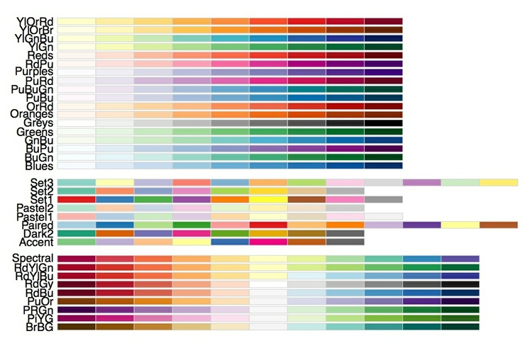
Now open the SQL tab, then enter and apply the following query:
UPDATE healthcare_facilities SET scale=sqrt(capacity)
UPDATE queries change the data in the table, in this case updating the healthcare_facilities table to set the values for scaleas the square root of the values in capacity.
Click Apply query and see that the scale column has now been populated with values:
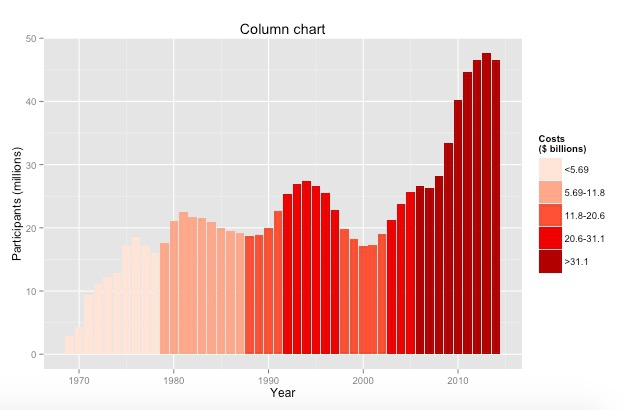
To filter the data, we can use another simple SQL query. In the SQL tab, enter and apply the following query:
SELECT *
FROM healthcare_facilities
WHERE type = 'GENERAL ACUTE CARE HOSPITAL' OR type = 'SKILLED NURSING FACILITY'
In this query, * is a wildcard that selects every column from the healthcare_facilities dataset. The WHERE clause applies the filter for the specific types we want to retain on the map.
The map should now look like this in the MAP VIEW:
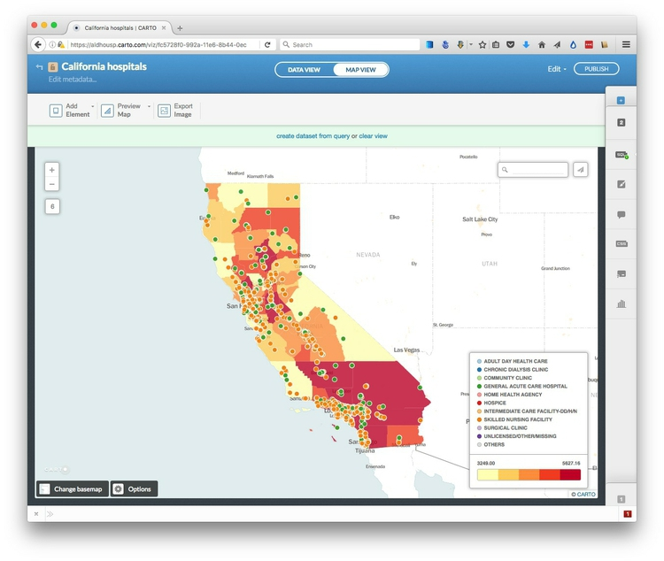
To exert finer control over the map styling, we can use CartoCSS, which styles maps in much the same way that conventional CSS styles web pages. See here for a CartoCSS reference.
In the MAP VIEW, select the ca_counties_medicare layer by clicking on 1. Then click on the CSS icon, where you will see the following code:
/** choropleth visualization */
#ca_counties_medicare {
polygon-fill: #FFFFB2;
polygon-opacity: 0.8;
line-color: #FFF;
line-width: 0;
line-opacity: 0;
}
#ca_counties_medicare [ hospital <= 5627.16] {
polygon-fill: #BD0026;
}
#ca_counties_medicare [ hospital <= 4197.21] {
polygon-fill: #F03B20;
}
#ca_counties_medicare [ hospital <= 3801.62] {
polygon-fill: #FD8D3C;
}
#ca_counties_medicare [ hospital <= 3581.08] {
polygon-fill: #FECC5C;
}
#ca_counties_medicare [ hospital <= 3249] {
polygon-fill: #FFFFB2;
}
Edit this to the following, to reset the breaks between the bins, and to use the same color scheme we used in week 10, using HEX values taken from ColorBrewer
/** choropleth visualization */
#ca_counties_medicare {
polygon-fill: #FFFFB2;
polygon-opacity: 0.5;
line-color: #FFF;
line-width: 0;
line-opacity: 0;
}
#ca_counties_medicare [ hospital <= 5627.16] {
polygon-fill: #a50f15;
}
#ca_counties_medicare [ hospital < 4000] {
polygon-fill: #de2d26;
}
#ca_counties_medicare [ hospital < 3750] {
polygon-fill: #fb6a4a;
}
#ca_counties_medicare [ hospital < 3500] {
polygon-fill: #fcae91;
}
#ca_counties_medicare [ hospital < 3250] {
polygon-fill: #fee5d9;
}
Note that that we have also edited the operators for all but one of the formulas for the breaks from <= (less than or equal to) to < (less then). This will create the same breaks as we used in the QGIS map. Click the Apply style button at bottom right.
Now switch to the CartoCSS editor for the healthcare_facilities layer, where you will find the following code:
/** category visualization */
#healthcare_facilities {
marker-fill-opacity: 0.9;
marker-line-color: #FFF;
marker-line-width: 1;
marker-line-opacity: 1;
marker-placement: point;
marker-type: ellipse;
marker-width: 10;
marker-allow-overlap: true;
}
#healthcare_facilities[type="ADULT DAY HEALTH CARE "] {
marker-fill: #A6CEE3;
}
#healthcare_facilities[type="CHRONIC DIALYSIS CLINIC "] {
marker-fill: #1F78B4;
}
#healthcare_facilities[type="COMMUNITY CLINIC "] {
marker-fill: #B2DF8A;
}
#healthcare_facilities[type="GENERAL ACUTE CARE HOSPITAL"] {
marker-fill: #33A02C;
}
#healthcare_facilities[type="HOME HEALTH AGENCY "] {
marker-fill: #FB9A99;
}
#healthcare_facilities[type="HOSPICE "] {
marker-fill: #E31A1C;
}
#healthcare_facilities[type="INTERMEDIATE CARE FACILITY-DD/H/N"] {
marker-fill: #FDBF6F;
}
#healthcare_facilities[type="SKILLED NURSING FACILITY"] {
marker-fill: #FF7F00;
}
#healthcare_facilities[type="SURGICAL CLINIC "] {
marker-fill: #CAB2D6;
}
#healthcare_facilities[type="UNLICENSED/OTHER/MISSING"] {
marker-fill: #6A3D9A;
}
#healthcare_facilities {
marker-fill: #DDDDDD;
}
Edit this to the following:
#healthcare_facilities {
marker-fill-opacity: 0.5;
marker-line-color: #FFF;
marker-line-width: 1;
marker-line-opacity: 1;
marker-placement: point;
marker-type: ellipse;
marker-width: [scale];
marker-allow-overlap: true;
}
#healthcare_facilities[type="GENERAL ACUTE CARE HOSPITAL"] {
marker-fill: #0000FF;
}
#healthcare_facilities[type="SKILLED NURSING FACILITY"] {
marker-fill: #FF8000;
}
Setting the marker-width to [scale], with the name of the field in square brackets, accurately scales the area of the circles according the capacity of the facilities. If necessary, when scaling circles in this way, you can use multiplication (marker-width: [scale]*2;) or division (marker-width: [scale]/2;) to increase or decrease the size of all the circles.
The CartoCSS above also makes the circles semi-transparent using marker-fill-opacity: 0.5;. It makes the hospitals blue using marker-fill: #0000FF;, and skilled nursing facilities orange using marker-fill: #ff8000;.
The map should now look like this:
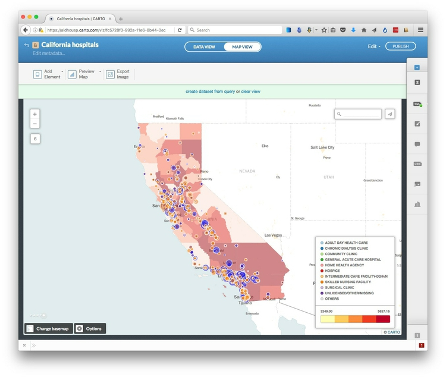
Notice that the legend still refers to the styling created by the wizard.
For the ca_counties_medicare layer, click on the legends icon:
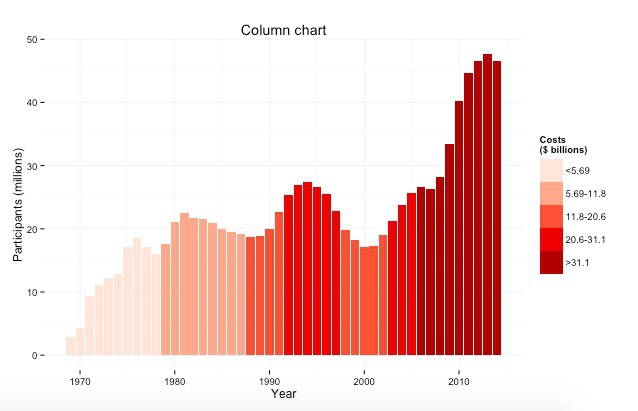
Edit the title to Medicare reimbursement per enrollee and check show, change the Left label to <$3,250 and the Right label to >$4,000; then change the colors to those that are now displayed on the map:
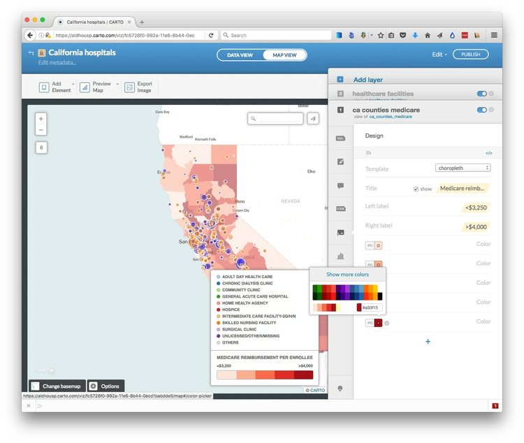
Select the </> link to edit the HTML to the following:
<div class='cartodb-legend choropleth'>
<div class="legend-title">Medicare reimbursement per enrollee</div>
<ul>
<li class="min">
<$3,250
</li>
<li class="max">
>$4,000
</li>
<li class="graph count_315">
<div class="colors">
<div class="quartile" style="background-color:#fee5d9; opacity:0.5"></div>
<div class="quartile" style="background-color:#fcae91; opacity:0.5"></div>
<div class="quartile" style="background-color:#fb6a4a; opacity:0.5"></div>
<div class="quartile" style="background-color:#de2d26; opacity:0.5"></div>
<div class="quartile" style="background-color:#a50f15; opacity:0.5"></div>
</div>
</li>
</ul>
</div>
Adding opacity: 0.5 to the styling for each of the legend items makes them match the semi-transparency of the map layer.
Edit the legend for the healthcare_facilities similarly, changing the HTML to the following:
<div class='cartodb-legend custom'>
<div class="legend-title">Healthcare facilities (scaled by capacity)</div>
<p>
<ul>
<li>
<div class="bullet" style="background:#0000ff; opacity: 0.5"></div>
General acute care hospital
</li>
<li>
<div class="bullet" style="background:#ff7f00; opacity: 0.5"></div>
Skilled nursing facility
</li>
</ul>
</div>
Select the ca_counties_medicare layer, and click on one of the counties and click the infowindow icon:
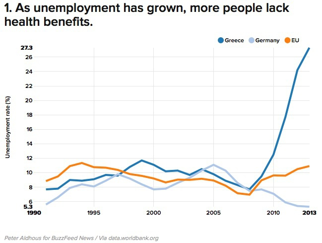
In the Hover tab, turn on the hospital toggle control, uncheck title?, then select the </> link to edit the HTML.
Insert a $ symbol in front of {{hospital}}:
<div class="cartodb-tooltip-content-wrapper">
<div class="cartodb-tooltip-content">
<p>${{hospital}}</p>
</div>
</div>
Click Apply and a tooltip showing the medicare reimbursement should now appear when you hover over each county.
Now switch to the healthcare_facilities label, select the infowindow tab, and in the Click tab select the capacity and name toggle controls. This time keep title? checked for each.
The map should now look like this:
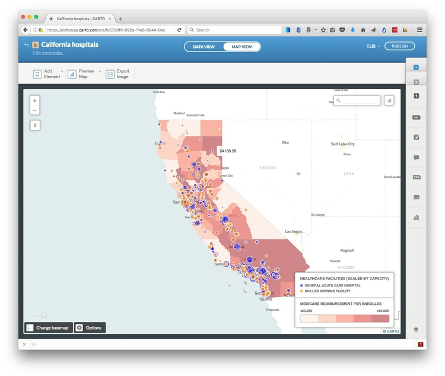
We are almost ready to publish the visualization, but before doing so, click Options at the bottom left of the map to select the controls and other items you want to include. Here the Search box, which geocodes locations entered by the user and zooms to them is disabled; the option to switch to a Fullscreen view of the map is enabled:
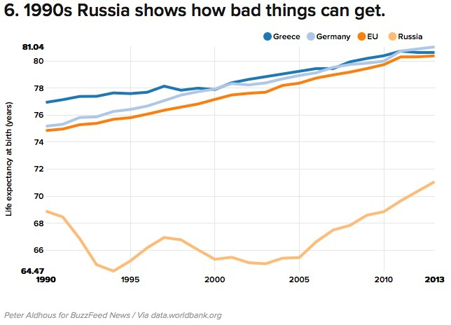
I strongly recommend disabling the Scroll wheel zoom which will otherwise cause the map to zoom unintentionally when someone scrolls down a web page in which the map is embedded.
Also explore the Add Element button at top left, which allows you to add a title and other annotations to your map.
You can also click Preview Map to see you map will look on Desktop and Mobile devices, or Export Image to download a static image.
Having finished working on the visualization, click the PUBLISH button at top right. This will call up the following options:
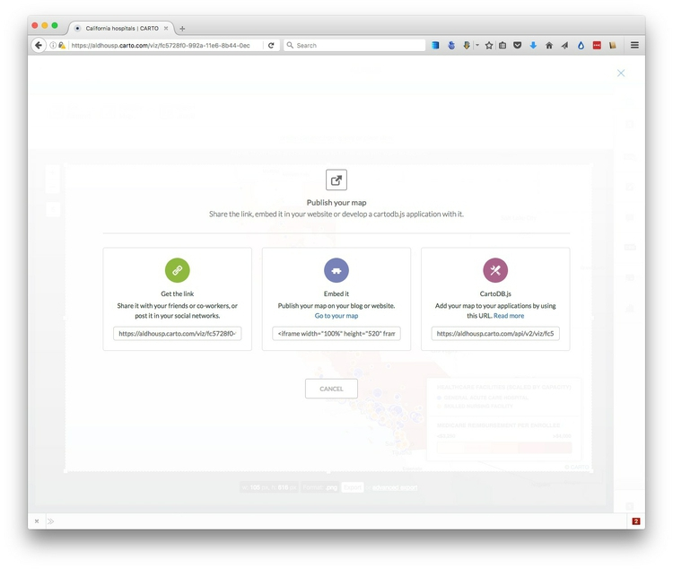
Copy the code from Embed it to obtain an iframe which will allow you to embed the map on any web page, in the following format:
<iframe width="100%" height="520" frameborder="0" src="https://aldhousp.carto.com/viz/fc5728f0-992a-11e6-8b44-0ecd1babdde5/embed_map" allowfullscreen webkitallowfullscreen mozallowfullscreen oallowfullscreen msallowfullscreen></iframe>
(Note that you can edit the dimensions of the iframe — here set at 100% of the width of the div in which it appears — and 520 pixels high) as required.)
Open the file test.html in your text editor, paste the iframe code between the <body> </body> tags and save the file. Then open in a web browser to see the completed map:
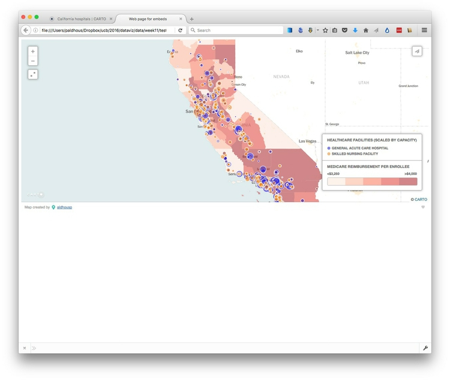
Carto has wizards to create other visualization types, which again can be customized using CartoCSS. These include Torque animations. See here for a tutorial that includes an animated map of North Atlantic storms.
Carto isn’t just a database — it is a “spatially aware” database that you can query to process geotdata, calculate distances or areas, and perform other geospatial analyses. This is achieved using PostGIS, an extension to the open-source PostgreSQL database that drives Carto.
From now on were are going to work with queries that use PostGIS spatial functions, which all have the prefix ST_.
Navigate back to your datasets and import the zipped shapefile seismic_risk, which should look like this in the MAP VIEW:
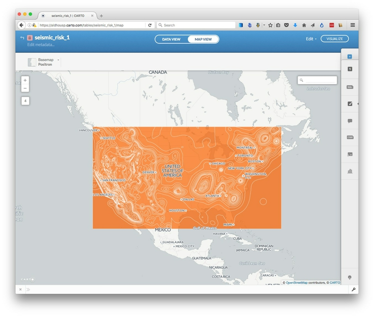
In the DATA VIEW, notice that there are two fields containing data about the mapped polygons: acc_val and valley.
Navigate back to your datasets, click the DATA LIBRARY link, and SEARCH for the World borders dataset. Select and then click the Connect dataset link.
In the DATA VIEW, notice that it contains a field with iso3 country codes:
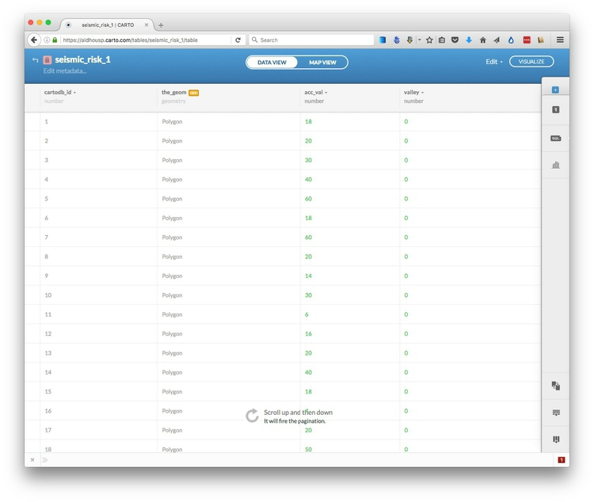
Open the SQL tab, and run the following query to replicate the clip we ran in week 10 using QGIS:
SELECT seismic_risk.acc_val, seismic_risk.valley, ST_Intersection(seismic_risk.the_geom, world_borders.the_geom) AS the_geom_webmercator
FROM seismic_risk, world_borders
WHERE world_borders.iso3='USA'
Let’s break this query down:
The SELECT clause selects the two data fields from the seismic_risk dataset, and creates a third column called the_geom using the PostGIS function ST_Intersection, which is the spatial overlap between the seismic_risk and world_borders maps.
The FROM clause needs to include both datasets mentioned in the SELECT clause, separated by commas.
Finally, the WHERE clause filters the results so that the data returned overlaps with the United States only.
Why does this query use the_geom_webmercator rather than the_geom? This is a quirk of Carto, which stores a projected version of the table’s geometry in a “hidden” field of this name, as explained here. Some PostGIS functions will only work on this version of the geometry, but Carto should warn you when this is necessary — try running the same query using the_geom and you should be prompted to use the_geom_webmercator.
Click on the Create dataset from query link, rename it as seismic_risk_clip, and switch to the MAP VIEW, which should look like this:
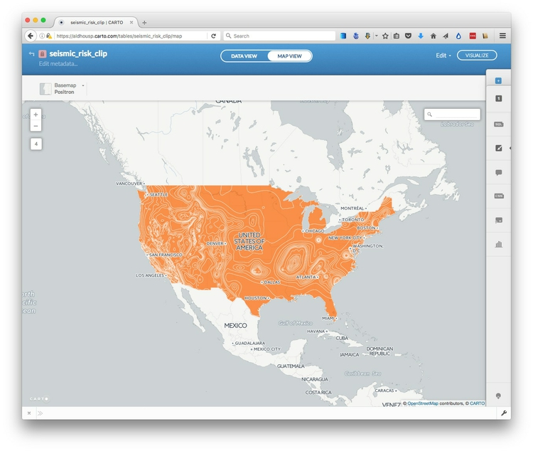
If you are processing data in Carto for use with other mapping tools, you would now want to export the data. To do this, click on the Edit link at top right, select Export... and choose the desired format:
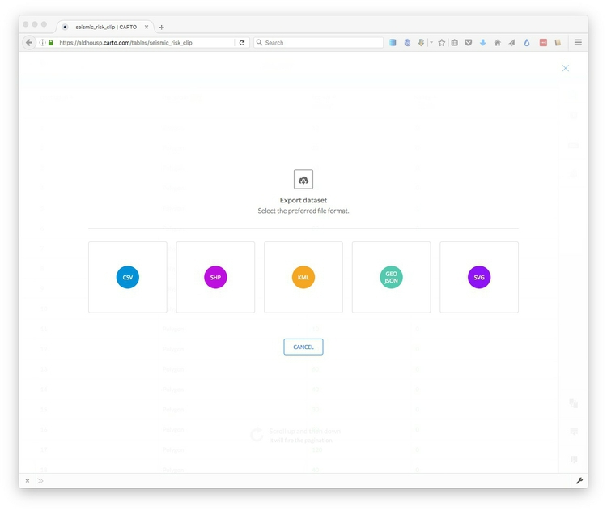
Import the file sf_test_addresses.csv. It will initially import with the_geom field containing null values, because there are no fields unambiguously labelled longitude and latitude:
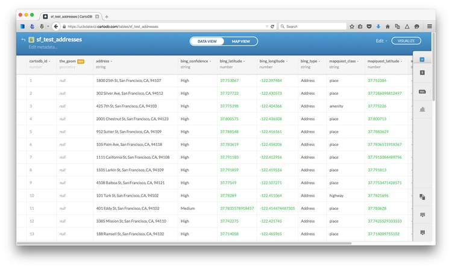
Click on the orange geo symbol, select bing_longitude and bing_latitude as geographic co-ordinates and click CONTINUE:
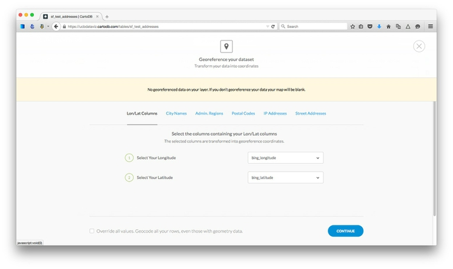
Switch to MAP VIEW to confirm that the points are displaying correctly in San Francisco. Then select Edit at top right, Duplicate dataset... and change its name to buffer.
In the SQL tab, run this query.
UPDATE buffer SET the_geom = ST_Buffer(the_geom::geography, 304.8)::geometry
This changes the map so that instead of points, we now have circles drawn around each of the points with a radius of 1,000 feet, or 304.8 meters. Notice that the entries in the_geom field are now all Polygon. Switch to MAP VIEW:
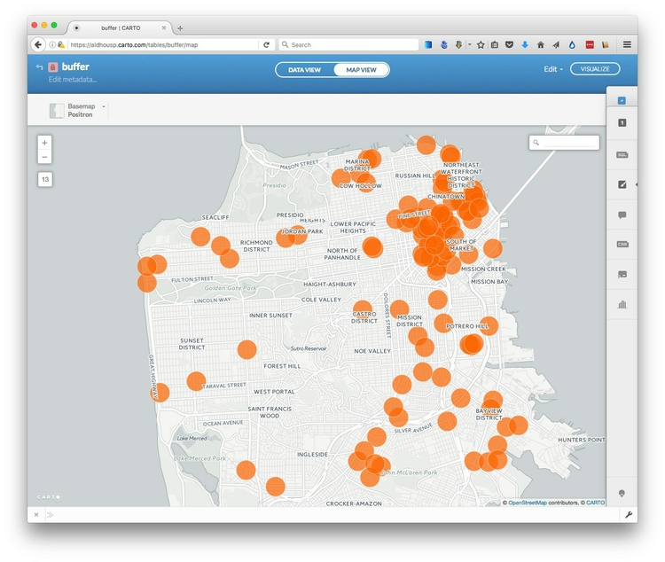
Let’s break this query down to understand how it works. First, note that it is an UPDATE query, so rather than selecting records from a table, it is changing the table. The change being made is to SET the field the_geom using the PostGIS function ST_Buffer, which draws a buffer around an object using the value specified in meters.
That’s all fairly easy to understand, but why does the query contain ::geography and ::geometry? These are data conversions that are necessary for the buffers to be drawn. Carto stores the_geom in a WGS84 datum, for which the units are degrees. The conversion from this geometry to geography is necessary for calculations to be made in meters. Once the buffer has been calculated, the data must be converted back to geometry to update the table in the database.
This query reverses the process, turning each circle into a point at its center:
UPDATE buffer SET the_geom = ST_Centroid(the_geom)
Try it out, then use the first query again to return to the buffered points. If you switch to the DATA VIEW, you will see that the values in the_geom are now Polygon rather than point coordinates.
Now we will dissolve all of these separate circles into a single buffer layer, by running this query:
SELECT ST_Union(the_geom_webmercator) AS the_geom_webmercator
FROM buffer
ST_Union is a function that dissolves multiple geometries into one.
In the data view, you will notice that there is now just a single field, called the_geom_webmercator, containing one Polygon. If you switch to the map view, you will see that the separate circles have now dissolved together:
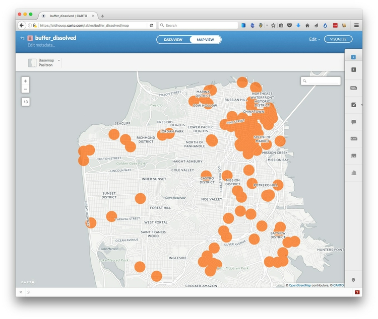
Select create dataset from query and rename the new dataset as buffer_dissolved.
Return to your datasets, open the original sf_test_addresses once more, and switch to the MAP VIEW.
Now click VISUALIZE at top right to create a map. Click the blue + symbol at top right, click on CONNECT DATASET and import the zipped shapefile sfpd_stations.zip. using the Data file tab. Then use the Simple option in the Visualization wizard to color the points denoting the locations of San Francisco police stations black. The visualization, with its two layers, should now look like this:
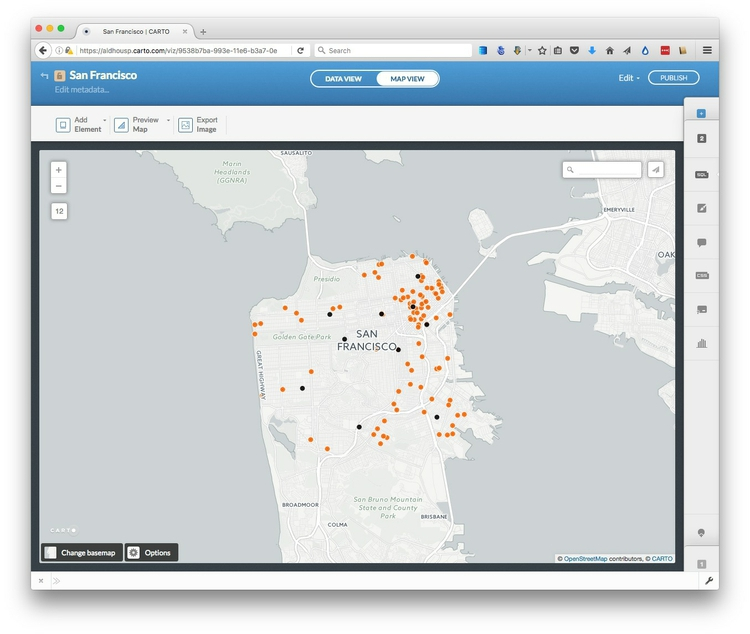
Next we are going to run a query to calculate the distance from each of the geocoded addresses to the nearest police stations. But first we need to create a new field called distance in the sf_test_addresses dataset to hold the results of this query.
Select this layer from the right toolbar, switch to DATA VIEW and then open the dropdown menu for any of the field headers. Select Add new column..., call it distance and make its type number.
Now select the SQL tab and apply this query:
UPDATE sf_test_addresses SET distance = (
SELECT ST_Distance(
sf_test_addresses.the_geom::geography,
sfpd_stations.the_geom::geography
)
FROM sfpd_stations
ORDER BY sf_test_addresses.the_geom <-> sfpd_stations.the_geom
LIMIT 1
)
The distance field should now have been populated with numbers, representing the distance in meters from that address to the nearest police station.
ST_Distance is fairly straightfoward, and you will recognize why the_geom fields must be converted to geography so that distances can be calculated in meters. This time they do not need to be converted back to geometry because neither of the the_geom fields is being updated by the query.
The really clever part is this:
ORDER BY sf_test_addresses.the_geom <-> sfpd_stations.the_geom
LIMIT 1
This is performs an indexed nearest neighbor search. <-> measures the distance to each police station from each address, and then ORDER BY sorts these distances in ascending order, nearest first. Finally, LIMIT 1 returns only the first value, which is the distance to the nearest police station from each address.
What if you want those distances in miles, rather than meters? One meter is 0.000621371 miles, so simply edit the query to include this conversion:
UPDATE sf_test_addresses SET distance = (
SELECT (ST_Distance(
sf_test_addresses.the_geom::geography,
sfpd_stations.the_geom::geography
))*0.000621371
FROM sfpd_stations
ORDER BY sf_test_addresses.the_geom <-> sfpd_stations.the_geom
LIMIT 1
)
I hope these queries have whetted your appetite to learn more about PostGIS. I suggest continuing with the NICAR tutorial below, which provides some more examples of queries, and how they have been used by news media to generate stories and visualizations.
File a full project update via your GitHub account, so that I can see your visualizations, data etc. Also write a summary, including:
Share this with me by 6pm on Wed Nov 9.
The Map Academy
A series of exercies in Carto, organized by difficulty.
Carto/PostGIS workshop from NICAR 2014 meeting
Introduction to PostGIS and Carto from Andrew Hill of Vizzuality, the company behind Carto, and data journalist Michael Keller. From the annual meeting of the National Institute for Computer-Assisted Reporting.
Introduction to PostGIS
Detailed series of tutorials, from Boundless. While this uses the OpenGeo Suite, rather than Carto, the lessons should be transferrable — but note that the OpenGeo Suite uses the field name geom rather than cartoDB’s the_geom.